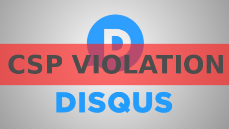
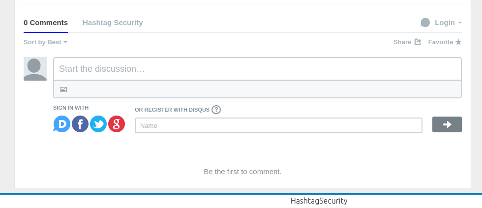

CSP: "Disqus gotta go!"

Recently I noticed that Disqus isn't loading anymore. It was easy to figure out that CSP was the reason why. In the end I was left with nothing more then the choice of which one needs to go.
Update: Burak Yiğit Kaya, a javascript developer at Disqus reached out to me to to address the problems in this post. I will write another post about the results shortly!
Obviously my choice was to keep CSP - this is a security blog after all. But let's take a look at what brought me to the point of giving up.
At first I tried to fix the problem the old fashioned way. Everytime Disqus required a rule change, I did it. At first I thought this might even work, up until my CSP looked something like this: (split for better readability)
default-src 'self';
script-src 'self'
a.disquscdn.com/embed.js
hashtagsecurity.disqus.com
code.jquery.com;
img-src 'self'
referrer.disqus.com/juggler/stat.gif
a.disquscdn.com/next/assets/img/;
frame-src 'self'
disqus.com/embed/comments/
disqus.com/home/forums/hashtagsecurity;
style-src 'self'
a.disquscdn.com;"
So far so semi-good. You might have noticed that I restricted the allowed sources to exactly to the least necessary space to decrease risk of XSS. However, all of that quickly lost it's weight when Disqus finally requested to more changes.
default-src 'self';
script-src 'self'
'unsafe-eval'
a.disquscdn.com/embed.js
hashtagsecurity.disqus.com
code.jquery.com;
img-src 'self'
referrer.disqus.com/juggler/stat.gif
a.disquscdn.com/next/assets/img/;
frame-src 'self'
disqus.com/embed/comments/
disqus.com/home/forums/hashtagsecurity;
style-src 'self'
'unsafe-inline'
a.disquscdn.com;"
Update: unsafe-eval was actually my fault. Appearently the jQuery function .load() is using eval internally.
That's right, to work properly Disqus needs unsafe-eval script and unsafe-inline style. For those of you not really familiar with CSP, let me explain the problem real quick.
CSP, or Content-Security-Policy, is meant to prevent XSS by restricting the sources of javascript, CSS stylesheets and other things such as images, frames, etc. To be able to do this, two important things have to be disallowed.
-
Inline JS or CSS code embedded directly in HTML files, such as these two examples
<script>alert("inline javascript")</script> style="height:100% width:100%" -
No use of the Javascript
evalfunction (as it's deemed highly insecure!)
Instead, JS and CSS should only be included as files via the src= option. The allowed sources can then be specified in the CSP rule. The problem with unsafe-inline and unsafe-eval is, that it enables the use ov the eval function and allows the use of inline CSS or JS code.
As sort of a last resort, I tried to create a single page with an alternate hard coded CSP rule, just to see if this would work.
disqus.html - containing the bad CSP and Disqus loader
<!-- META Header containing the full "Disqus compatible" CSP rule-->
<meta http-equiv="Content-Security-Policy" content="default-src 'self'; script-src 'unsafe-eval' 'self' a.disquscdn.com/embed.js hashtagsecurity.disqus.com code.jquery.com; img-src 'self' referrer.disqus.com/juggler/stat.gif a.disquscdn.com/next/assets/img/; frame-src 'self' disqus.com/embed/comments/ disqus.com/home/forums/hashtagsecurity; style-src 'self' 'unsafe-inline' a.disquscdn.com;" />
<!-- DIV to load Disqus -->
<div id="disqus_thread"></div>
<script type="text/javascript" src="disqus.js"></script>
<noscript>Please enable JavaScript to view the <a href="http://disqus.com/?ref_noscript">comments powered by Disqus.</a></noscript>
<a href="http://disqus.com" class="dsq-brlink">blog comments powered by <span class="logo-disqus">Disqus</span></a>
disqus.js - containing the typical Disqus code
/* * * CONFIGURATION VARIABLES: EDIT BEFORE PASTING INTO YOUR WEBPAGE * * */
var disqus_shortname = 'hashtagsecurity'; // required: replace example with your forum shortname
/* * * DON'T EDIT BELOW THIS LINE * * */
(function() {
var dsq = document.createElement('script'); dsq.type = 'text/javascript'; dsq.async = true;
dsq.src = '//' + disqus_shortname + '.disqus.com/embed.js';
(document.getElementsByTagName('head')[0] || document.getElementsByTagName('body')[0]).appendChild(dsq);
})();
The problem here is, that loading the disqus.html into my blog by using an iframe resulted in something like this.
On the first look, I though that did the trick. After checking with the disqus.html file, I saw that it should really look like this.

What happened is, that the iframe which held disqus.html didn't resize properly in height. After looking a bit into dynamically resizing iframes to fit their content, I realized that this wouldn't be possible without adding more javascript which in turn resulted in further adjustments to my original CSP rule.
At that point I decided that Disqus just isn't worth the pain. So until I found a better comment system that can easily be integrated alongside CSP, you can simply reach out to me via twitter. - @HashtagSecurity